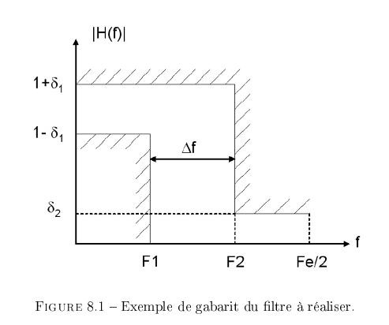
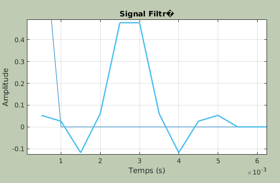
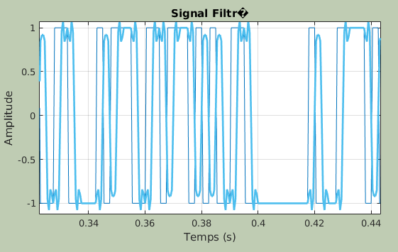
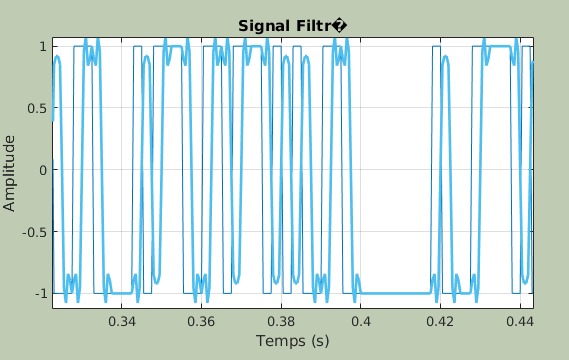
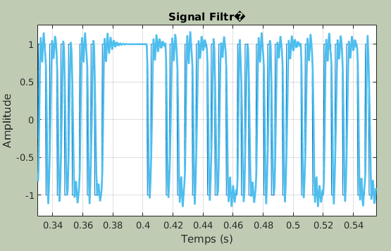

L'objectif de cette première partie du TP est de vous permettre d'analyser les differentes méthodes de synthèse des filtres numériques, en observant le comportement de filtres déjà programmés.
Lancer filtnum sous MATLAB.
Cette commande permet d'afficher un gabarit de reponse frequentielle souhaitee, et d'afficher la reponse impusionnelle reelle du filtre en fonction de la fenetre utilisee.
On joue ainsi sur :
- L'ordre du filtre
- Les oscillations
- L'importance de la pente
Le gabarit du filtre est défini par l'utilisateur parmi les quatre catégories suivantes : - Filtre passe-bas - Filtre passe-haut - Filtre coupe-bande - Filtre passe-bande On peut rêgler F_e la fréquence d'échantillonnage, ∆f la largeur de la zone de transition, δ_1 l'amplitude des ondulations en bande passante et δ_2 l'amplitude des oscillations en bande atténuée figure 8.1). 
Un ordre automatique est determine a partir des caracteristiques attenduessss : - F_e, - ∆f - δ_1 - δ_2
Les differentes fenetres permettent de jouer sur : - L'amplitude de oscillation - La raideur de la pente
Le temps de propagation de groupe est toujours constant (mais ne possede pas la meme valeur) du fait de la linearite de la phase.
Ordre optimal: ordre minimal tel que le gabarit fréquentiel soit respecté.
La raideur de la pente augmente avec l'ordre. Ainsi, on peut continuer a augmenter l'ordre apres l'optimal pour permettre une coupure plus nette.
On regarde la reponse a une impulsion.
Pour creer le signal via MatLab, on utilise la fonction
matlab
filter([b_0, b_1, ...], [a_0, a_1, ...], [x_0, x_1, ...])
Pour un filtre RIF, on prend [a_0, a_1, ...] = [1]
On peut ainsi directement lire les differents coefficients comme les amplitudes de la reponse impulsionnelle echantillonnee.

Pour determiner le temps de propagation de groupe, on mesure le decalage temporel entre un pic/zero du signal en entree et le meme sur le signal en sortie.
Quel que soit le filtrage (passe bas, haut, ...), on ne remarque pas de difference significative. En effet, le spectre est uniforme.
 Les discontinuites sont moins marques mais le signal reste identifiable. En effet, le filtrage a conserve les frequence presentant le maximum de puissance.
 Le signal n'est plus identifiable. On a supprimer les frequences representant le maximum de puissance.
Les resultats sont similaires au passe-bas / passe-haut.
On peut sur chacun des filtres observer l'existance d'un retard. Celui-ci est du au temps de traitement du filtre.
Les modèles analogiques qui peuvent être utilisés dans ce TP pour synthétiser des RII sont les modèles de Butterworth, de Chebychev I et Chebyshev II et elliptique.
De meme aue pour les filtres RIF, il existe une formule permettant de determiner un ordre optimal approche en fonction des caracteristiques du filtre et des caracteristiques attendues.
Comme pour les filtres RIF, la pente augmente avec l'ordre. Il n'est pas non plus necessaire de monter a des ordres aussi importants que pour les filtres RIF pour tenir convenablement dans le gabarit fixe.
Cependant, cette reponse impulsionelle correcte a faible ordre a un cout : l'augmentation du temps de propagation de certaines frequences avec l'ordre. Ceci peut nuire a la bonne restitution d'un signal, ou une mauvaise identification.
La difference majeure entre ces deux filtres reside dans le traitement inegal apporte au oscillation. Quand Chebychev I privilegiera une reponse lisse en haute frequence, Chebychev II le fera a basse frequence.
Comme dit precedement, l'ordre augmente le temps de propagation. Toutefois, il n'ameliore plus la pente au dela d'un certain ordre car il cree des oscillations parasites.
La methode elliptique est optimal car : - parfaitement adaptee aux dimensions du gabarit - presentant une pente nette - ne possedant pas d'oscillation en hautes frequences
Cependant, c'est egalement la methode qui presente le temps de propagation de groupe le plus important : "On n'a rien sans rien"
On ne s'interessera qu'au signal NRZ  On constate une asymetrie apparente du signal en sortie. Ceci est du au fait que le temps de propagation de groupe ne soit pas constant. Cela explique egalement les oscilations au niveau des discontinuites.
```bash
Maitrise de | |
Nombre de | | coefficients | Eleve | Faible
Precision pour | |
Adapte au | | multi-cadence | Oui | Non ```
L'objectif de cette deuxième partie du TP est de vous permettre de réaliser sous Matlab un modem (modulateur/démodulateur) de fréquence simplifié.
Comme le montre la figure 8.2, la modulation de fréquence (ou modulation FSK : Frequency Shifit Keying) revient à générer un signal sinusoïdal prenant
la fréquence F_1 ou F_0 selon la séquence binaire à transmettre. Un bit 0 sera transmis sous la forme d'un morceau de cosinus de N_s = 100 échantillons à la frequence F_0 = 4080 Hz , tandis qu'un bit 1 sera transmis sous la forme d'un
morceau de cosinus de N_s = 100 echantillons a la frequence F_1 = 980 Hz.
La fréquence d'échantilonnage F_e sera prise égale à 48000 Hz.
Tout est decrit dans le code Matlab suivant (tp2.m):
```matlab
%Realisation d'un modulateur/demodulateur de frequences simplifie
%Fichier a completer
%Fevrier 2011
clear all; close all;
%Parametres Fe=48000; %Frequence d'echantillonnage F0=980; %Frequence du cosinus representant le bit 0 F1=4080; %Frequence du cosinus representant le bit 1 Ns=100; %Nombre de points par symbole physique %associe e un bit e transmettre SNR_dB=100; %SNR souhaite donne en dB
%Generation de la suite de bits 0, 1 correpondant au texte e envoyer X = str2bin('H');
%Generation de deux morceaux de cosinus comprenant Ns echantillons : %cos0 pour coder le bit 0, de frequence F0=980 cos0=cos(2piF0/Fe[0:100]); %cos1 pour coder le bit 1, de frequence F1=4080 cos1=cos(2piF1/Fe[0:100]);
%Modulation FSK : on remplace chaque bits 0 et 1 par un morceau de cosinus %cos0 ou cos1 signal=kron(X.',cos1)+kron(abs(X.'-1),cos0);
%Puissance du signal Ps=E(|signal(t)|²) Ps=mean(abs(signal).^2);
%Trace du signal hold on; abscisse = linspace(0, 1/Fe, length(signal)); plot(abscisse, signal);
%Canal : ajout de bruit, le SNR est fixe en dB dans les parametres de %depart Pb=Ps10^(-SNR_dB/10); bruit=sqrt(Pb)randn(1,length(signal)); signal_bruite=signal+bruit;
%Trace du signal bruite et de son spectre plot(abscisse, signal_bruite); hold off;
%Definition de la frequence de coupure du filtre (distinction 0/1) Fc=2500; %Generation de la reponse impulionnelle du filtre permettant de recuperer %les bits 1 en utilisant la fonction fir1 de matlab (!!mettre 2Fc : cf help de fir1) nbCoeff=100; B1=fir1(nbCoeff, 2Fc/Fe, 'high'); %Filtre Passe-Haut %Trace de la fonction de transfert du filtre et du spectre du signal %superposes hold on; nfft=2^nextpow2(length(signalbruite)); Y=abs(fft(signalbruite, nfft)); abscisseNorm=0:1/length(Y):(1-1/length(Y)); plot(abscisseNorm, Y); hold off; %Filtrage du signal pour recuperer les "1" signalfiltre1=filter(B1, 1, [signalbruite, zeros(1, nbCoeff/2)]); %Trace du signal de depart et du signal filtre close all; hold on; plot(abscisse, signalbruite); plot(abscisse, signalfiltre1(nbCoeff/2+1:end)); %On rend le signal causal en decalant du TPG hold off;
%Generation de la reponse impulionnelle du filtre permettant de recuperer %les bits 0 en utilisant la fonction fir1 de matlab (!!mettre 2Fc : cf help de fir1) B0=fir1(nbCoeff, 2Fc/Fe, 'low'); %Trace de la fonction de transfert du filtre et du spectre du signal %superposes hold on; plot(abscisseNorm, Y); hold off; %Filtrage du signal pour recuperer les "0" signalfiltre0=filter(B0, 1, [signalbruite, zeros(1, nbCoeff/2)]); %Trace du signal de depart et du signal filtre close all; hold on; plot(abscisse, signalbruite); plot(abscisse, signalfiltre0(nbCoeff/2+1:end)); hold off; ```